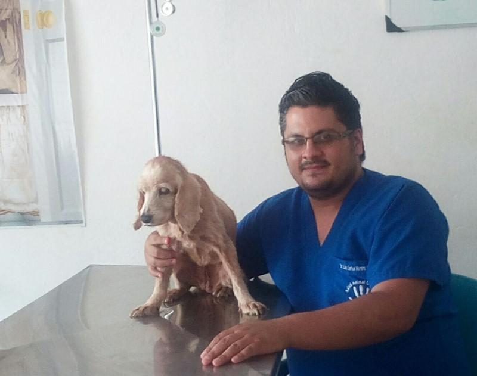
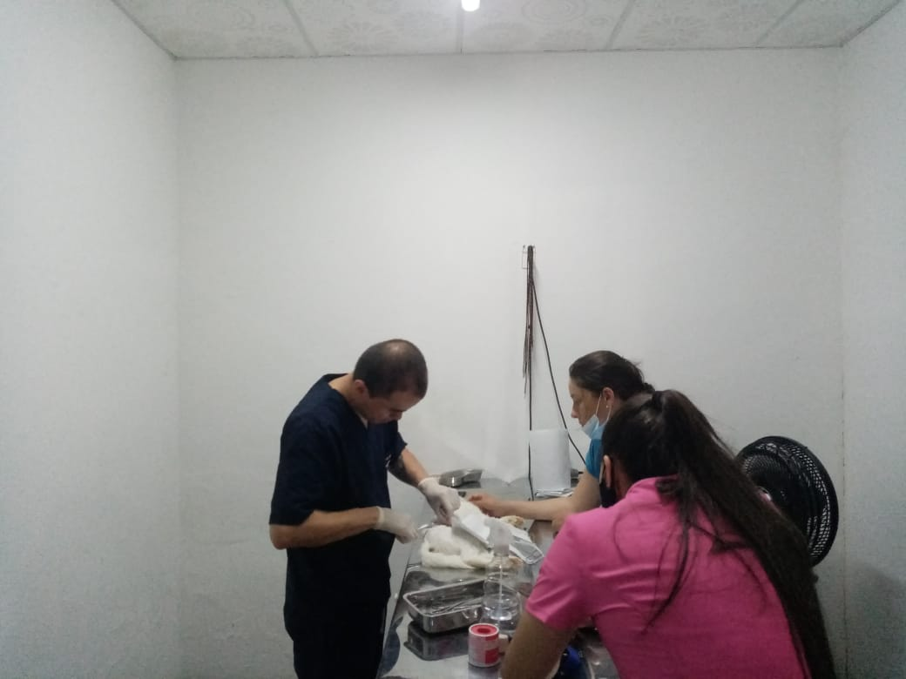
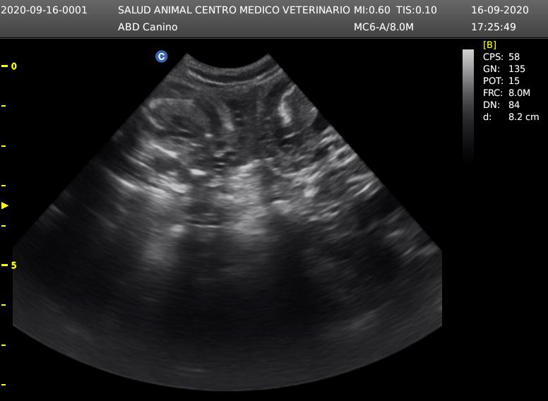
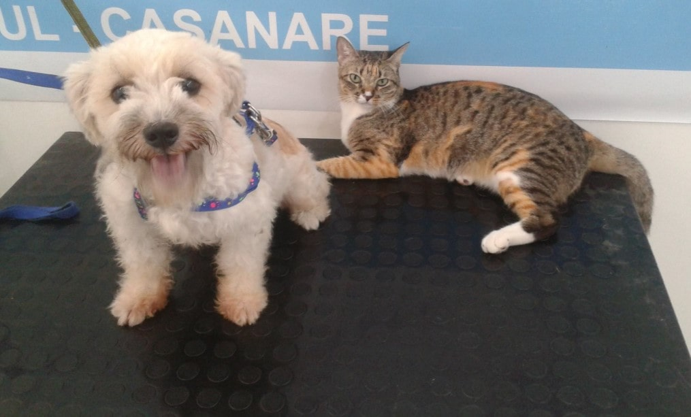
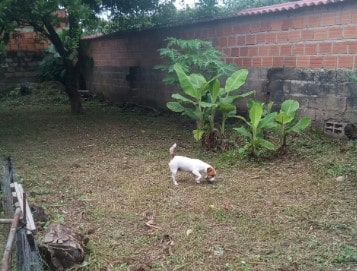
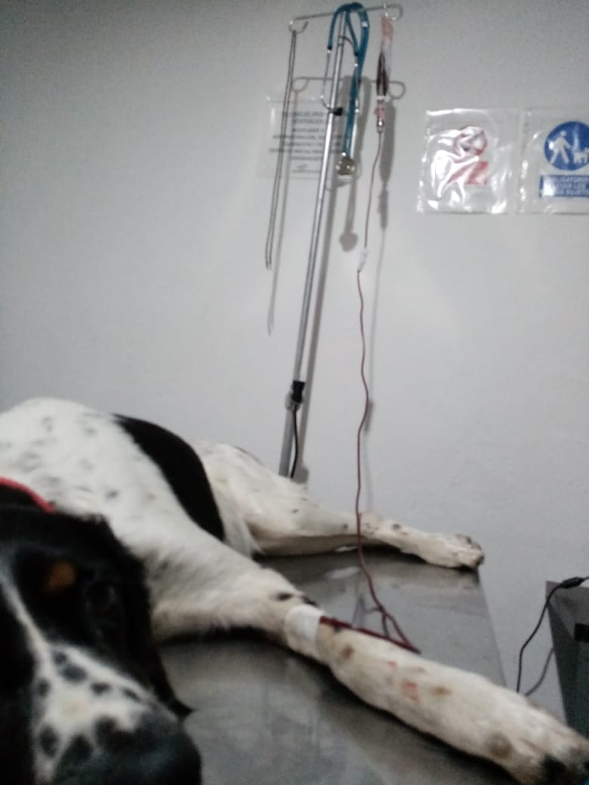
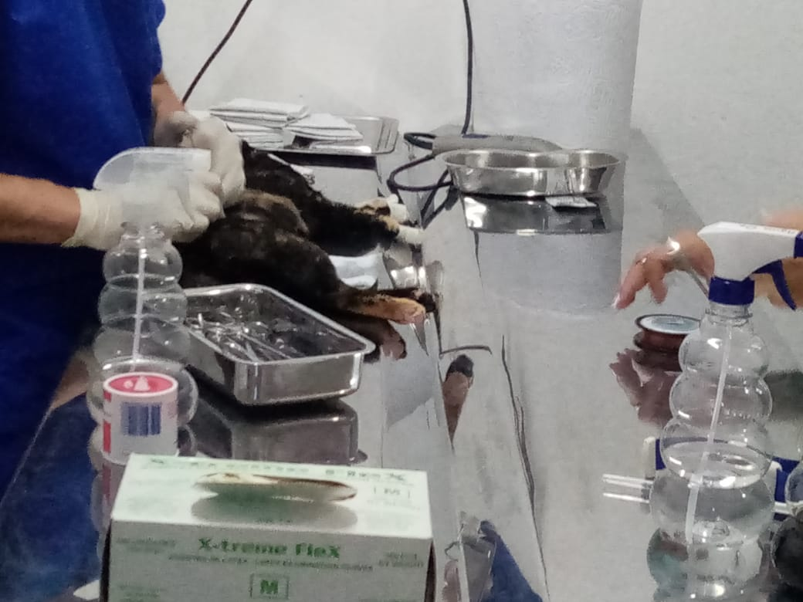
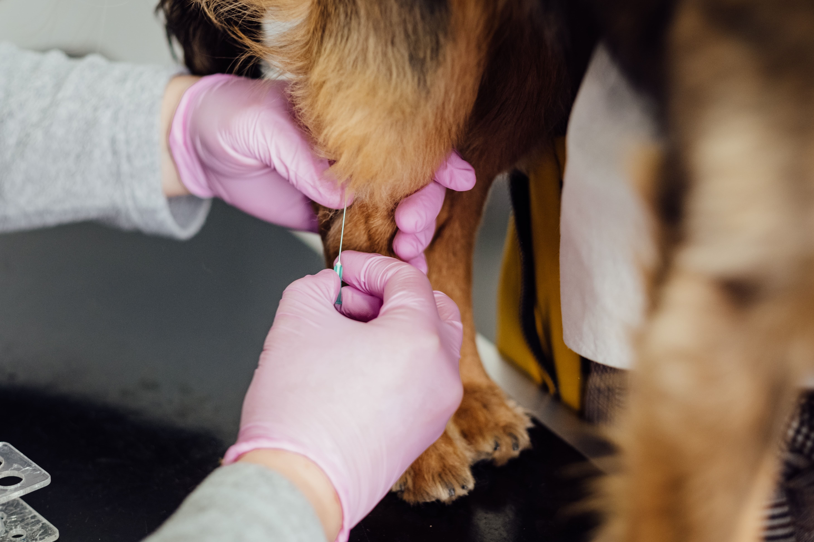

El paciente es examinado y tratado únicamente por médicos veterinarios titulados y con experiencia en clínica y medicina animal.
Cirugía

Los procedimientos quirúrgicos se realizan con equipos especializados y materiales de alta calidad teniendo como objetivo mejorar la salud y el bienestar del paciente.
Ecografía

Buscando ofrecer una mejor atención en Salud Animal Centro Médico Veterinario y con el ánimo de ofrecer servicios a otros profesionales del sector, nuestra clínica adquirió un equipo de ecografía, para ofrecer estudios ecográficos en consultorio. En un comienzo los estudios se van a realizar en pequeñas especies (Mascotas).
Estética

Es un servicio adicional en donde se atienden animales que requieren peluquería y belleza. Es adelantado por personal idóneo y calificado.
Asesoría en Producción Animal
Las asesorías son realizadas por médicos veterinarios especialistas en producción. Atendemos bovinos, equinos, porcinos, aves, peces y producciones no convencionales.
Guardería

Servicio adicional en donde se presta el hotel canino, en este tienen actividad física, grandes espacios y zonas verdes, alimentación y paseos. La mascota se entrega limpia.
Hospitalización

El paciente es atendido por un profesional titulado las 24 horas del día administrando y aplicando las medicinas necesarias para mejorar su salud.
Urgencias

Atendidos por personal con experiencia y médicos titulados.
Vacunación

Vacunación preventiva en perros y gatos, registro de vacunas.
Consulta Domiciliaria
El médico veterinario se trasladará al lugar que es requerido para atender el paciente ya sea en casa o en finca. Atendemos animales de granja.